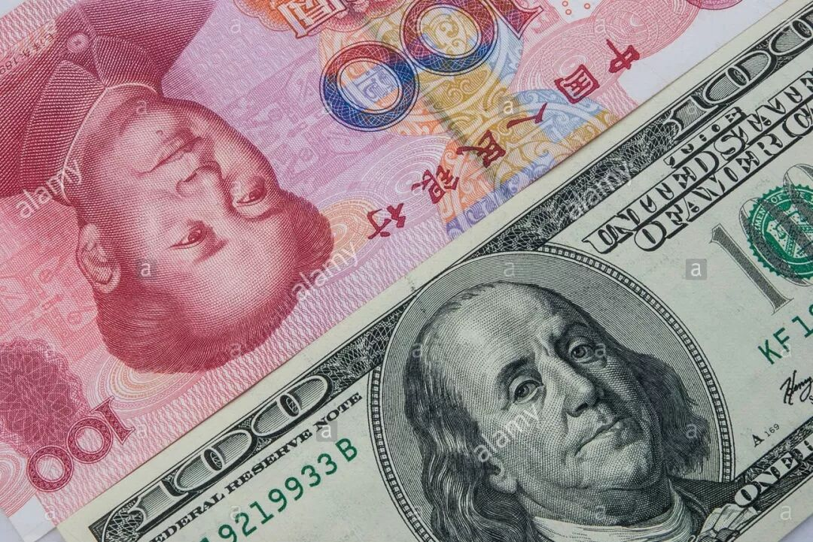
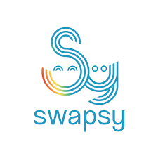
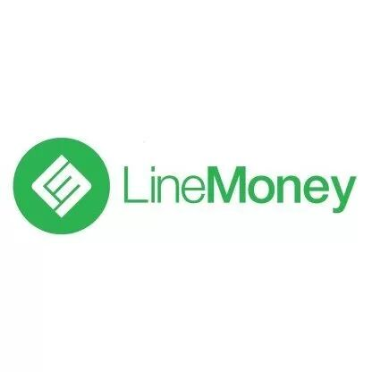

--------点击蓝字关注我--------

最近在淘宝上要买的东西越来越多了，所以人民币花的比较快，经常需要把美金转换成人民币。
以前由于美国的比特币比国内的比特币便宜，所以我经常用美金买了比特币以后再卖成人民币，还可以赚个1%的差价。
最近可能是国内购买比特币的需求变小了吧，两边的差价越来越小，甚至最近国内的价格有的时候会比美国还贵那么一些。这条换汇的路就走不通了，于是我开始寻找别的换汇方式。
一开始以为从人民币换美金会比较困难，从美金换人民币应该比较容易的，没想到市面上并没有一个很好的解决方案。下面是我摸索出来的一些可能性。
Swapsy （https://theswapsy.com/）

我看网上以前推荐最多的就是这家了，不过这家每次能换的额度比较少。而且因为它是跟另外一个真实的用户直接进行交易，所以要是没有想要交易的用户的话，就只好自己发起交易，等着别人来跟自己交易。目前在Swapsy上面自己发起交易的手续费还是蛮坑爹的，3%多一点。
Xoom （https://www.xoom.com/）
这家是Paypal旗下的换汇服务，不过比较坑爹的是他们的汇率要比当前的官方汇率差很多，平均来看大概有2%吧。除此以外他们还会收不少的手续费。
LineMoney （http://www.linemoney.us/）

看到一亩三分地上面推荐了这家，于是加了他们微信聊了一下。他们家转的速度还是比较快的，不过汇率会比官方汇率差3-4%，再加一个3美金的手续费。
除此以外，还有一些明显更差的方案，比如通过美国这边的银行，西联，transferwise等等方案，就不在这边细说了。目前想到比较好的可能是用Fidelity的卡在国内的ATM取现，每天可以取1000美金，不过这个方案的缺点是需要把卡寄回国，然后需要找个朋友帮忙取钱然后存到账户里，也是相当麻烦。
总结
既然目前基本都要2-3%的手续费，那还不如直接用信用卡在支付宝上付款，也就3%的手续费。
当然也可以找一些靠谱的中介，应该损耗会低很多，比如未名的那个二手区。
不过最安全的肯定是找认识的朋友换汇了。。。。这个大家低调。。。